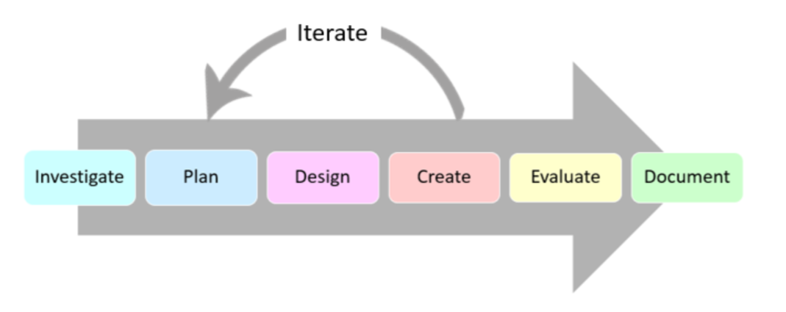
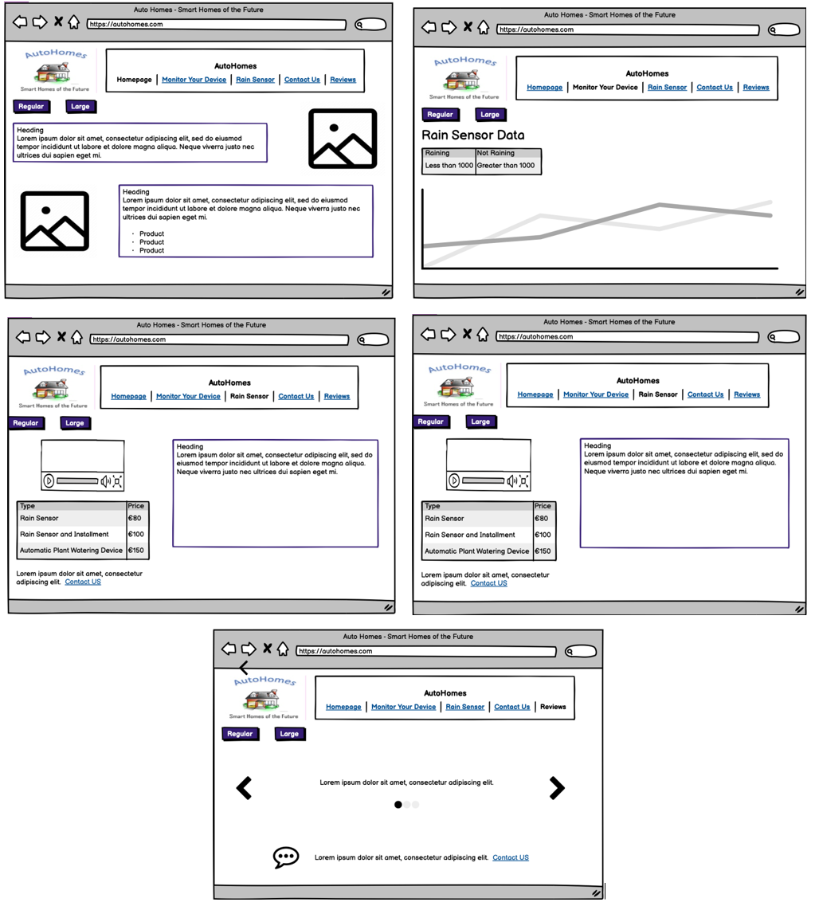

The rain sensing system will be comprised of an interactive website and an embedded system that will enhance granny’s life by providing her with vital information to assist her in providing her much-loved plants with sufficient, but not excessive, water.
I will use a combination of agile and waterfall approaches for my project. The elements of the agile approach I am including means that the creation process is more adaptable. If I encounter a problem, I will revert to an earlier step to solve the issue which makes it easier and quicker to find and fix bugs. The inclusion of aspects of the waterfall approach means the end goal of my project is clear. Combining components of both approaches will ensure efficient completion of my project.
Hardware possibilities for my project include a Micro:bit, a Raspberry Pi, or an Arduino. I will use a Micro:bit as they are available in school, and I have experience programming them. I bought a raindrop sensor consisting of a rain board that detects rainfall and a control module that converts values from analogue to digital. I will use the built-in speaker on the Micro:bit as an alarm.
The raindrop sensor is a standalone device that monitors rainfall. When the value being read by the sensor is less than 1000, this indicates rain is falling. When the value exceeds 1000, there is no rainfall. When it rains, the Micro:bit will play a sound to alerting the user. Rain data can be viewed remotely through my AutoHome company website.
To code the Micro:bit I will use Microsoft MakeCode as it supplies a simplified coding method using blocks. I will use the IDE Thonny to send the data from the Micro:bit to a Firebase Realtime cloud hosted NoSQL database.
To meet the systems requirements I will connect the Micro:bit to the rain sensor using jumper wires, a breakout board, and a breadboard. The breakout board allows me to access the pins at the bottom of the Micro:bit via the breadboard. Using the MakeCode IDE I will program the Micro:bit to read in the data obtained from the rain board and to play a sound whenever rain falls on the sensor. I will then the Micro:bit via USB to my laptop where I will read the data from the Micro:bit to Firebase using Python. Using Java Script, I will convert this data into a graph which will be displayed on my webpage.
The wireframes below demonstrate proposed elements of my website which will be designed with accessibility and inclusivity in mind. There will be an option to increase the text size on the webpage if necessary for people who find it difficult to read small text.
